I make complicated things playable.
Playable means you can pick it up and use it without a manual: a knowledge base, a prompt library, a job post, a game about timesheets. Content systems, AI content operations, knowledge architecture, marketing and employer brand, with years of production work underneath. Pick your lane; the page re-sorts.
Research a world until you can hear its true language, then build the smallest structure that keeps that language true after you leave.
The structure has a name: Core Content, the governed layer where approved claims live with their source, owner, reuse rules and expiry. Every surface inherits the truth from there instead of improvising a version of it. Deliberately the smallest thing that holds: governance that outgrows the problem stops being used, and an unused system drifts.
Bespoke each time, because nobody's content problem is shaped like anyone else's. A staffing agency's true sentence is not a bank's. Research first; the structure is only what it takes to carry the answer.
Everything here is that practice at different altitudes. A taxonomy, a job post, a help centre, a podcast episode, a score for a dance piece, each is a world researched until its real language shows up, then given a structure it can survive in. Four moves, every time.
How the system actually holds
The layer stack is the shape of it. These are the rules that make the shape reliable enough for a non-technical team to run it without me in the room.
AI operations with the governance attached
Everyone can generate. The harder work is making generation accountable enough to use in a regulated industry, where being confidently wrong has consequences.
Knowledge someone can reach into
A knowledge base is a promise about who gets to know what. In most organizations that promise gets made by accident, one permission setting at a time. This one was written down.
Writing where the words are the interface
In a regulated product, microcopy is not decoration. It is the last place a promise gets made before someone acts on it.
Marketing that survives contact with the truth
Employer brand is the discipline where overclaiming is punished fastest: the new hire finds out in week two. That constraint made me better at all the rest of it.
Producing, end to end
Production is where I learned that a system is only good if the person inside it can forget it exists.
The work I would do anyway
Twelve years of it. Dancers, actors, circus performers, dark rooms, one shot a night.
Three that carry the argument
Two pages. One organization. Both saying different things.
An ungoverned content estate from the inside: a made-up staffing company, real failure modes. Press the button to compile both pages through a voice cascade and a claim registry.
We onboard new nurses in as little as 48 hours.Onboarding takes two to six weeks, set by credential verification. Our talent partnersclinical schedulers work with you directly.
Credential review generally takes four to six weeks.Onboarding takes two to six weeks, set by credential verification. Your care coordinatorclinical scheduler will be in touch.
2 contradictions · 1 unsourced claim · 1 uncontrolled term. Nobody wrote these to disagree. The structure let them.
One claim record, one source, one owner, one expiry, inherited by both surfaces. The term resolves to the controlled vocabulary. That is Core Content, and the whole job.
A content compiler, not a content generator
The first on-brand piece took over four weeks, almost none of it writing. So voice, compliance, terminology and audience were defined once as versioned layers and compiled deterministically into one prompt per task. Voice is a diff; compliance is a ratchet that only tightens. Agents propose, operators promote, nothing publishes itself. Brief to published became five days.
Shipped and in daily use by a non-technical team. The company was acquired in 2026; the architecture was built portable and has since been generalized. Adoption was uneven across functions, the honest part, and people had their own work to hold together. So the guarantees don't depend on how fast anyone picks up the tooling.
Search, AI answers and site search are one problem
Someone with a question at eleven at night asks Google, or an assistant, or the help centre. Same person, same worry. I wrote the findability spec unifying technical SEO, E-E-A-T, grounding assets, bilingual parity gates and ISO 9001 document control, then ran a hackathon that produced a repeatable workflow: two gold-standard posts a month, no added headcount.
Answerability KPIs designed and instrumented. The company was acquired mid-rollout, so these are presented as the measurement system, not achieved results.
Read the full case study →An employer promise, kickoff to launch
A job post is someone deciding whether to move their life, so accuracy beats enthusiasm. At Shopify: pivotal contributor to the EVP with C-suite stakeholders, campaign copy across EMEA, APAC and the Americas including a researched Singapore localization, 76% follower growth, the Top Employer application. At CHCA: five nurse retention personas. Also diagnosed JS-rendered ATS portals invisible to Google for Jobs, then built an audit agent.
Read the full case study →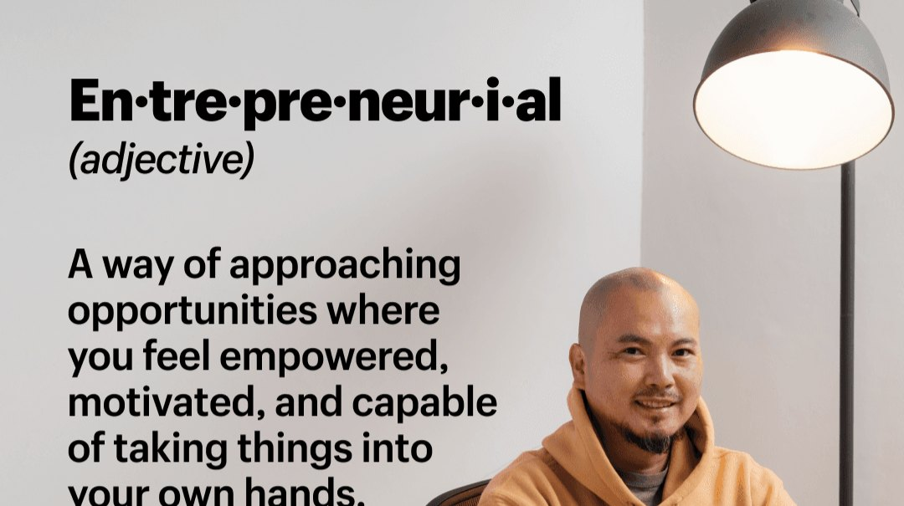
The rest of the work
Watch one, play one
This is the part of AI I actually find exciting, and it isn't faster copy. Interactive media used to need a team, a quarter and a budget, so a content person with a point to make wrote a memo instead. Now the argument can be a thing you play.
Produced, prompted, edited and written by me. Ninety seconds, live on the client's homepage.
Getting a timesheet approved is, for an agency nurse, genuinely one of the hardest parts of the week. Wrong week selected. Missing signature. A coordinator who left at four. It's a small indignity repeated hundreds of times, and it doesn't survive being put on a slide. So it's a joke you have to play instead. The timesheet is the boss level.
Built with Claude as producer and prompter. Click the panel below so it takes the keyboard, then use the arrow keys and space.
The people who said yes
I hosted and produced the QT Podcast end to end. Booking a CEO is one skill; getting them to say something worth keeping is a different one. These are their words, quoted from the published episodes and linked back to them, from the season I ran. They were generous with them.
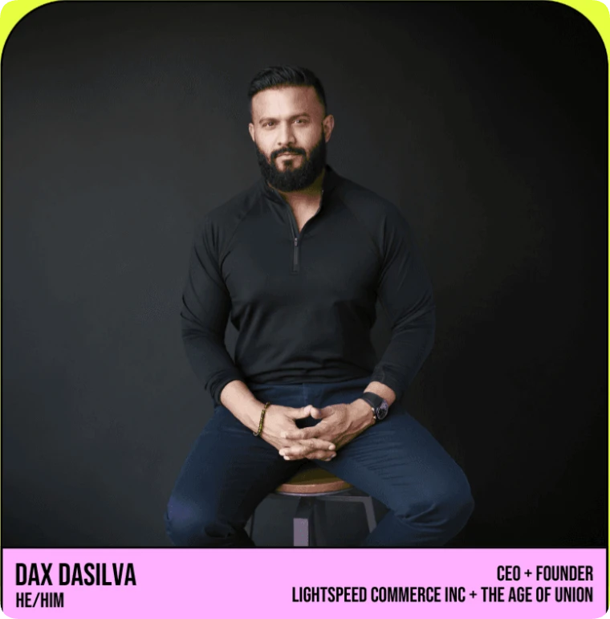
“There's a magic to our community. There are ways that we can inspire and influence the journey that your company is going to have that's unique. So don't be shy, be proud.”
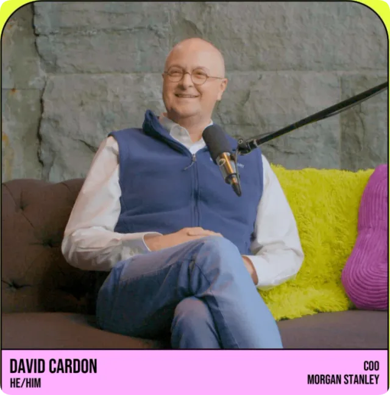
“Your network is a very powerful part of the way that your career progresses. These kinds of conferences are amazing spaces for people to connect with each other, share ideas, and develop together as professionals.”
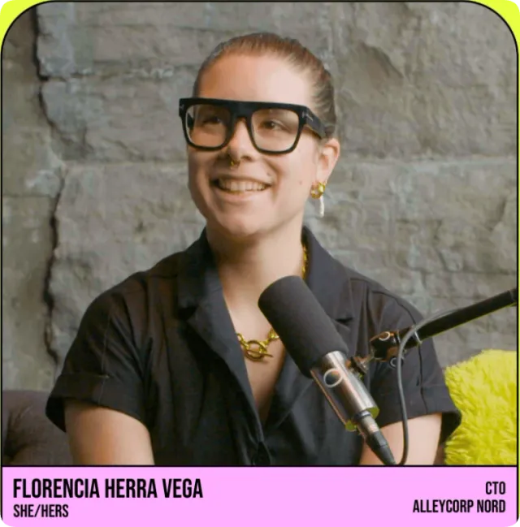
“There's a joy in finding people who understand the same things as you. There's joy to be found in difference, in not being in your comfort zone and sharing something new with people.”
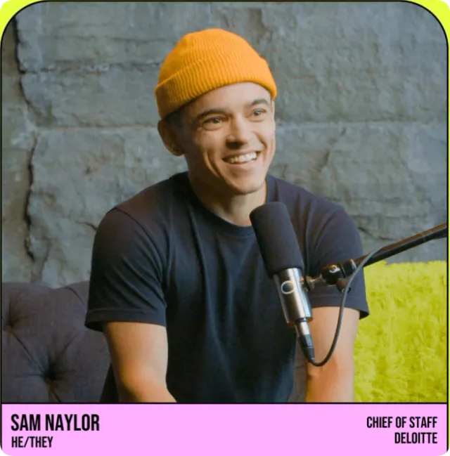
“My career shifted from something that felt like I was hiding, into something where I'm trying really hard to push the boundaries of what a professional looks like, talks like, and exists like.”
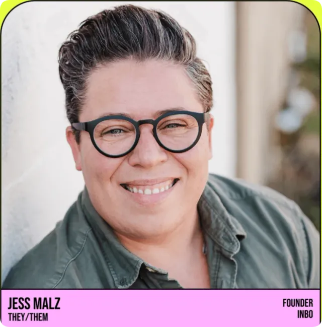
“Some of the most influential leaders I've ever seen lead with humility, lead by asking questions, lead by listening. Questions encourage self-reflection, they empower others to take ownership.”
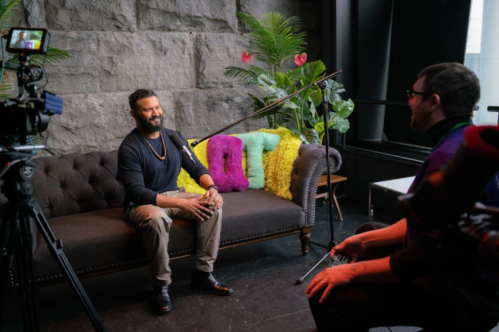
“With so many different people and with so many different stories, we hope to contribute towards building a story format that honours our community's diversity.”
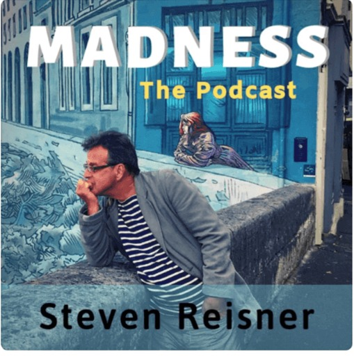
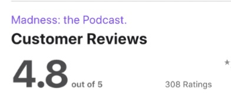
Also co-producer of Madness: the Podcast, featured on Michael Moore's Rumble.Sound for bodies in space
Twelve years composing and performing sound for dance, theatre and installation, from artist-run lofts to The Kitchen. Live work mostly: one room, one night, no undo. It has its own history, its own collaborators and its own standards, and it is still running.
[guāng yīn], the lightest dark is darker than the darkest light
Nien Tzu Weng's immersive solo, three years in the making, weaves performance with video mapping, augmented reality and laser work, in a dream landscape drawn from her Taiwanese roots. I built the sound. Alongside me in the credits: video mapping and mixed-reality artists, a rope specialist, and a Laser Girl.
Show page at MAIaskîwan ᐊᐢᑮᐊᐧᐣ
An operatic multimedia performance created and directed by Cree artist Tyson Houseman, built from live video feeds, object performance at miniature scale, and mountainscapes standing in for deep, non-linear geologic time. I composed the electroacoustic score and perform it live, under baritone lyrics sung in nêhiyawêwin and viola da gamba. It has toured across several seasons and venues. Show page
Full performance CV on request · 2013–2025
The numbers, with caveats attached
Every one traceable to documented evidence
Hover or focus any figure for its source
Where I’ve worked
“crafted with the help of the amazing Dae Courtney”
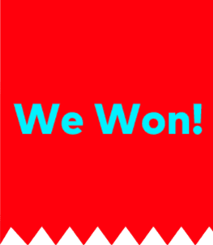
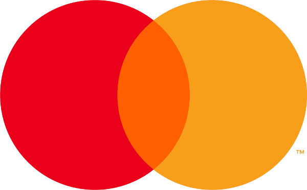
Tell me which lane you're hiring for.
Hiring for content systems?
Hiring for AI content operations?
Hiring for knowledge and IA?
Hiring a writer who ships structure?
Hiring for marketing or employer brand?
Hiring a producer?
Programming, commissioning, collaborating?
Content systems, AI content operations, knowledge management, information architecture, content design, marketing, or something that doesn't have a clean name yet. I'll tell you honestly whether I'm the right person, and who is if I'm not.
Montreal hybrid or remote across Canada · full-time or fractional